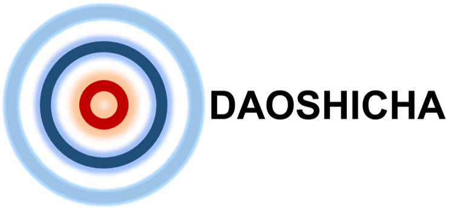

${p.name0}教授
${p.name1}导师
邮箱:${p.email}
电话:${p.phone}
${p.p2_text_first_article}第一作者文章量
${p.p2_text_max_factor}最高因子
${p.p2_text_H_index}H-index
合作者数量${p.p3_text_n1}
出国经历${p.p3_text_v2}
主要职称${p.p3_text_v3}
重要职务${p.p3_text_v4}
担任编辑${p.p3_text_v5}
1.研究方向
${p.end_text_n1}
2.导师画像
${p.end_text_n2}
3.硕士发文可能性
${p.end_text_n3}
4.2016-20年第一作者文章数据
1.xxxxxx
2.xxxxxx
3.xxxxxx
4.xxxxxx
5.xxxxxx
6.xxxxxx
7.xxxxxx
5.不良评价
无
报告日期:xxx
分析耗时:xxx